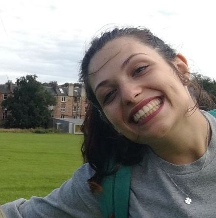

LABORATORIO DI SISTEMI SOFTWARE
Introduction
Remember our motto:
there is no code without a project, no project
without problem analysis and no problem without requirements.
Requirements
Requirement analysis
Problem analysis
Test plans
Project
Testing
Deployment
Maintenance
By Laura Mazzuca email: laura.mazzuca@studio.unibo.it
